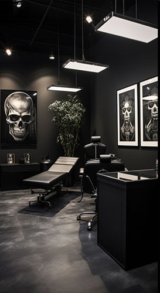

Inside the Studio

About Our Studio
Eccentric Modern Therapy Tattoo is a female‑owned, inclusive tattoo studio built on the belief that art can be healing.
We provide a safe, welcoming environment for every client, regardless of background, identity, or experience.
Our mission is to help you express your authentic self through custom artwork that reflects your story.
Our artists embrace their individuality and channel it into their work.
Whether you’re looking for horror realism, pop art, traditional, or custom designs, our team brings passion, skill, and creativity to every piece.
Meet the Artists
Jean specializes in dark, cinematic realism. Her work blends high‑contrast shading with emotional storytelling, creating pieces that feel alive.
Athena brings bold color and clean lines to her designs. Her pop‑art inspired work mixes modern flair with classic tattoo tradition.
Josie’s pieces balance haunting imagery with smooth shading and fine detail. Her realism work is known for its depth and precision.